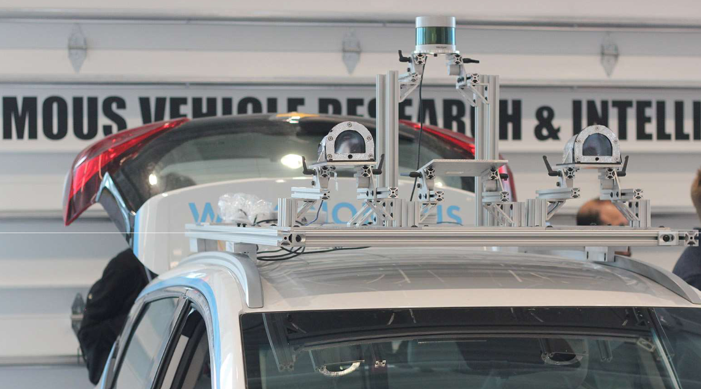

WATonomous is the University of Waterloo's autonomous vehicle design team. Every year, we continuously iterate and improve on our design which is 100% student designed and researched.
Sensor array mounted to vehicle
Our vehicle, lovingly named "Bolty", is equipped with two front-facing Sony IMX249
cameras giving it a 136 degree field of view. Our Velodyne VLP32 is mounted above the car
and two Continental ARS430 radars are currently installed in the front bumper. Inside Bolty is even more technology. In the spacious trunk lives Bolty's brain. Our Version
2 computer rack designed by me is a custom-designed platform that allows for quick modifications of the
electrical components. There is also ample cooling and anti-vibrations mounts to keep
everything functioning.
• The top level holds the radiator, safety kill-switch, USB hub, Velodyne and Blue Light
PCB boxes.
• The second level holds the Crystal Rugged and radar controllers
• The third level holds the network switches
• The fourth and bottom level holds the power management systems
Frustrum projection used to produce 3D bounding boxes
A linear Kalman filter I implemented is used to estimate and track the position, dimensions, velocity, and angular acceleration of the object. Our object tracker is based on a modified version of the popular AB3DMOT tracking library.